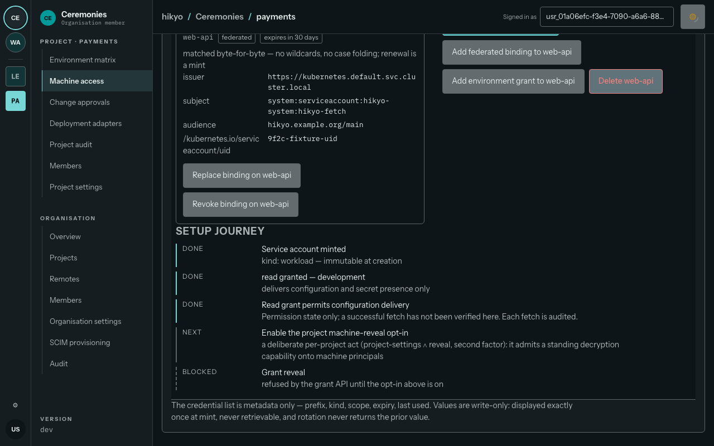
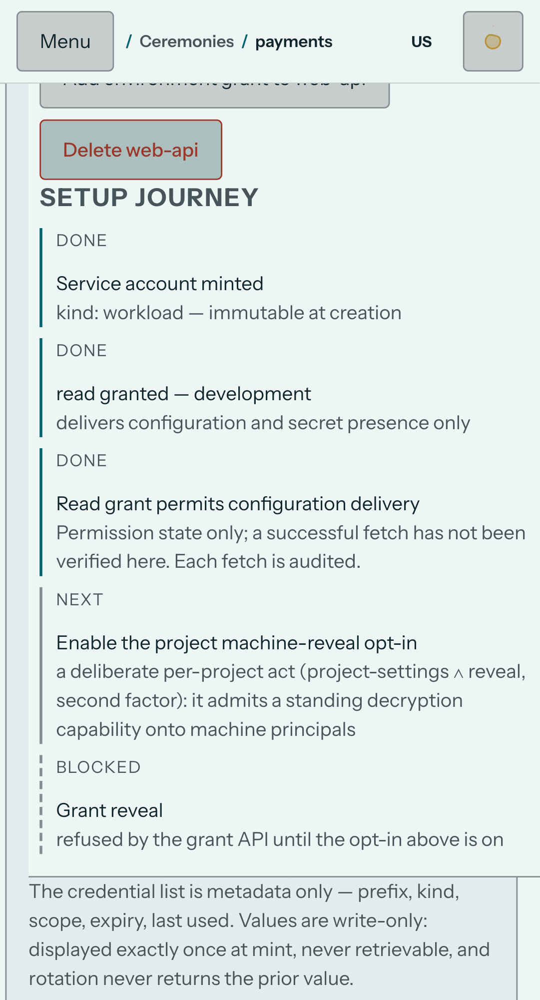

Five assigned families compared at desktop 1280×800 and mobile 393×851, dark and light. All 32 paired real-app views passed axe serious/critical=0 and page-width containment. Three additional app detail captures and interaction checks passed. Machine setup copy needed correction; six focused desktop/mobile cases including display-once mint passed in 2.8 minutes. Final claim-label wrap replay passed at desktop and mobile (2.8 minutes).
Baseline: 1b5c04cf1241343c556a2c662e988aeca846a20e. Real Go binary serving its embedded SPA, disposable SQLite instances and genuine authenticated tenant. App ports47789/47790, reference server47780. Frozen prototype files were rendered directly and remained unchanged. Different fixture records/counts are expected; the comparison assesses structure and interaction, while current DESIGN.md controls visual tokens and the owning ADR controls semantics.
| Family | Evidence and disposition |
|---|---|
| Environment matrix31 | Rail plus sidebar, grouped rows, plain monospaced config values, masked secrets, named absence/problem states, environment visibility, draft entry and protected labels match the locked shape. Actual group collapse/expand and explicit multi-environment editor disclosure passed at both viewport sizes. The table may scroll internally on a phone; the page itself never overflows. |
| Reveal/edit6, ceremony modal | Centered cell modal and nested purpose-bound ceremony enumerate the protected environment and one key, offer a passkey, and explain why TOTP cannot authorize the protected disclosure. Write-only replacement stays blank; no secret was revealed to create this evidence. Desktop single-environment editor leaves spare grid space. Recommendation: retain current layout for 1.0; this is density polish, not a canonical behavior failure. |
| App chrome15+16+18e | Project/org settings retain h1, lede, jump index and panels. Both db/git source options exist. Project retention and org default/per-project retention state remain in settings. Sidebar treatment e measured exactly 30px inter-section heading padding and 1px left rule at desktop/mobile; the active segment is teal. Mobile Escape closes navigation and restores Menu focus. |
| Revision history6 | Right drawer preserves list/detail structure, current and pinned indicators, revision metadata, restore/pin controls and named settings retention entry. Mobile detail is an explicit drill-in with a back action. Opening a historical revision worked at both viewports. Historical secrets remain presence-only. |
| Machine access3 | Tabbed inventory and expanded credentials/bindings, targets/actions, then full-width setup journey match the locked anatomy; mobile stacks the expansion. Two later tabs are supported additions. Found stale statements treating available features as absent and a grant as delivery proof. Corrected below. Focused replay also exercises real display-once mint and confirmation-gated dismissal. |
| Question | Options | Choice and reason |
|---|---|---|
| How should a reveal grant waiting on opt-in read? | A: blocked until prerequisite; B: not in this build; C: hide the step. | A. The backend supports it. The five-step journey should explain the next operator action without misrepresenting availability. |
| Does a read grant prove the first delivery succeeded? | A: label permission readiness; B: claim success; C: invent telemetry. | A. The view has grant data, not a successful-fetch receipt. It now says the read grant permits configuration delivery and explicitly distinguishes that from observed success. |
| How should absent Kubernetes status be explained? | A: no status in this view, check HikyoSecret conditions with kubectl; B: claim the operator is unimplemented; C: show healthy. | A. The separate operator exists. Absence of displayed status supports neither a build-availability nor a health claim. |
| Should snapshots be pixel-identical despite different seeded tenants? | A: compare canonical structure plus current tokens and semantics; B: change the app to static demo records; C: edit frozen references. | A. ui-spec explicitly assigns structure to prototypes, current visual language to DESIGN.md, semantics to ADRs. |
| Can a long federation claim name overlap its value? | A: wrap the label within its column; B: truncate the exact claim; C: widen the entire card. | A. Final screenshot review found /kubernetes.io/serviceaccount/uid overflowing the 140px desktop label column despite axe passing. The label now wraps, preserves every byte and leaves the locked expansion geometry intact. The browser regression checks rendered scrollWidth against clientWidth. |
Actual dark page is oklch(0.19 0.012 220), light page oklch(0.965 0.008 200); chrome uses the current panel token rather than the brighter light raised token. Instrument Sans Variable includes the specified Instrument Sans family; keys and values use IBM Plex Mono. Capture metadata records computed fonts, colors, radii, control geometry and sidebar rules. The old prototypes contain their own earlier token values, so raw CSS-string equality to every frozen file is not the contract.
Actual computed styles and axe records · Frozen reference computed styles · Actual interaction assertions
Frozen reference left, actual embedded application right. Baseline machine images retain the discovered wording so the defect remains reviewable; final corrected journey evidence follows below.
The supported grant now says blocked until its prerequisite is met. Permission readiness is explicitly separated from observed delivery; existing reveal grants also become blocked when the project opt-in is withdrawn. These final screenshots include the wrapping correction.


TypeScript check, production build, all 83 web test files/677 tests and the focused 39 identity derivation tests pass after the copy change. Six focused desktop/mobile machine cases passed, including all five tabs, expansion and real display-once mint. Final desktop/mobile label-wrapping replay also passed (2.8 minutes). Parent retains exact combined-head replay, review, CI and merge. This local browser evidence is not a deployed-production claim. The sixth locked social-signin/2 family is explicitly post-1.0 in its owning scope. The existing real login was inspected: username/password, passkey, configured identity provider, setup-authority establishment and recovery; no registration or JIT door was falsely advertised. Its current login capture is retained.
{kind=link}
{kind=link}
{kind=link}
{kind=link}
{kind=link}